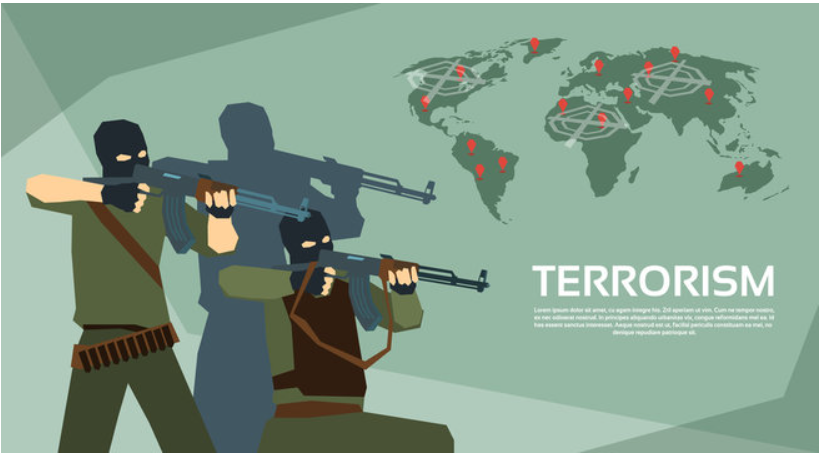

This data analysis project centered around the Netflix dataset. Here I have showcased my burgeoning proficiency in Python, a versatile tool for data analysis. Availing Python's pandas library, I adeptly handled data wrangling tasks, from cleaning and preprocessing the dataset to structuring it for analysis. I harnessed the power of seaborn and matplotlib to craft engaging data visualizations, enabling clear and insightful storytelling. Through this project, I not only demonstrated my hands-on experience with Python but also my ability to utilize it as a fundamental resource in unraveling data-driven narratives
.

This project focus on the COVID-19 dataset, where I leveraged my SQL skills to perform data extraction, transformation, and analysis. Using SQL, I efficiently queried and organized data, providing valuable insights into pandemic trends and regional variations. I demonstrated proficiency in writing complex SQL queries to extract relevant information and summarize key findings. This project showcases my emerging expertise in SQL for data analysis and serves as a testament to my ability to derive meaningful insights.
This project focus on customer churn, where I harnessed my thriving Power BI skills to design a dynamic and insightful dashboard. Through Power BI's intuitive interface, I connected to data sources, conducted data cleaning and transformation, and constructed interactive visualizations that vividly portrayed customer churn trends. My ability to optimize Power BI's features, such as slicers, filters, and drill-through capabilities, not only facilitated deep dive analysis but also delivered a user-friendly experience for stakeholders. This project illustrates my growing proficiency in Power BI and my aptitude for creating impactful, data-driven dashboards to support informed decision-making."
.

In this data analytics project, I meticulously analyzed a comprehensive terrorism dataset to derive valuable insights. Savvying my newly acquired skills in data cleaning, exploratory data analysis, and statistical modeling. I effectively uncovered trends, patterns, and potential contributing factors in terrorism incidents. This project honed my ability to extract, transform, and visualize data using tools like Python and Excel, showcasing my proficiency in data manipulation and visualization.
.